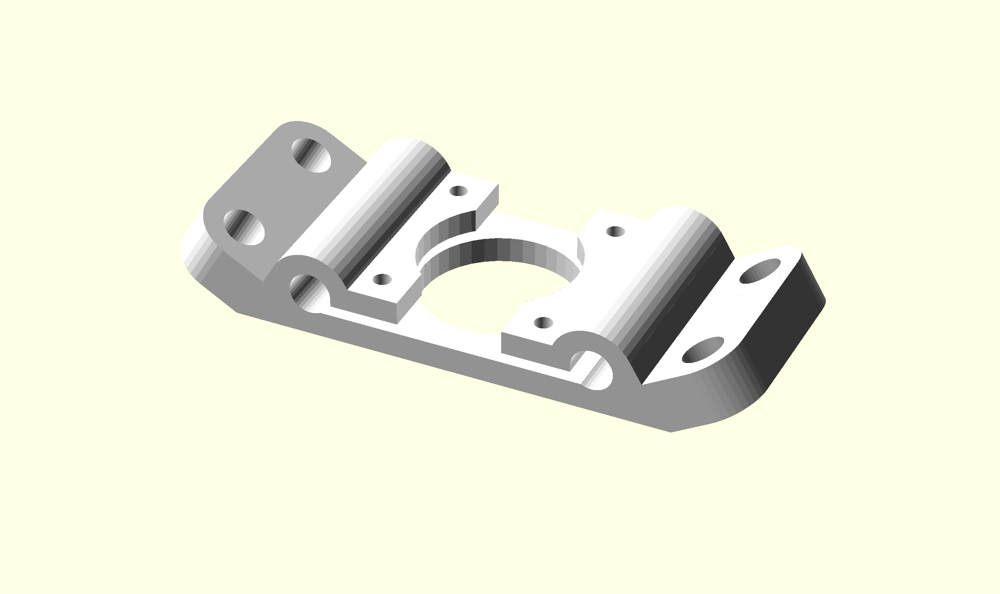
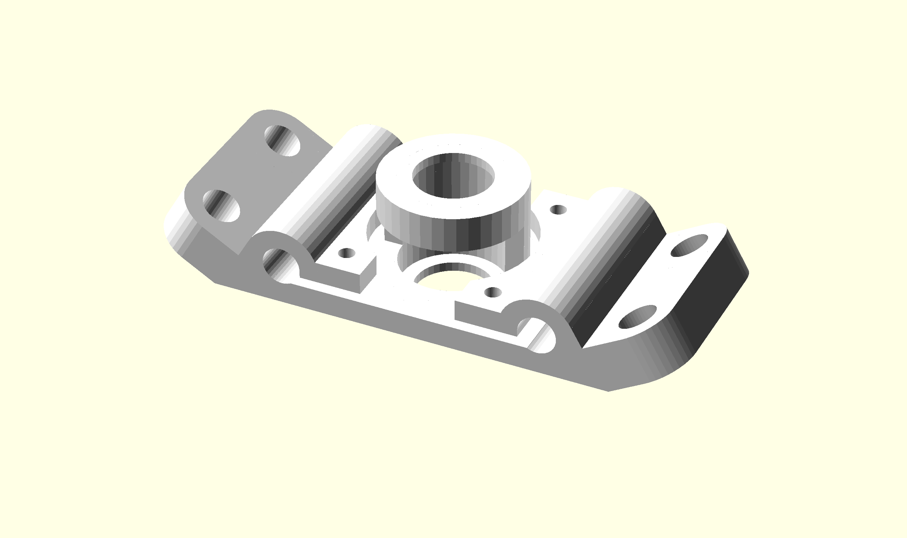
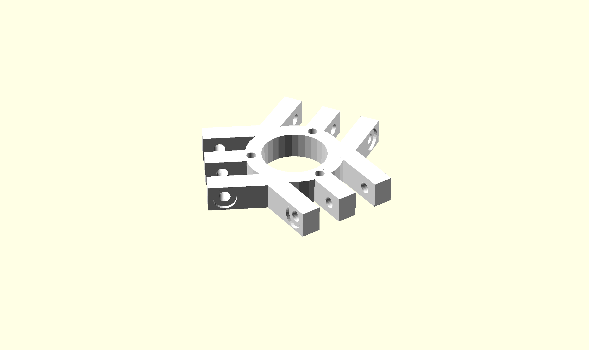
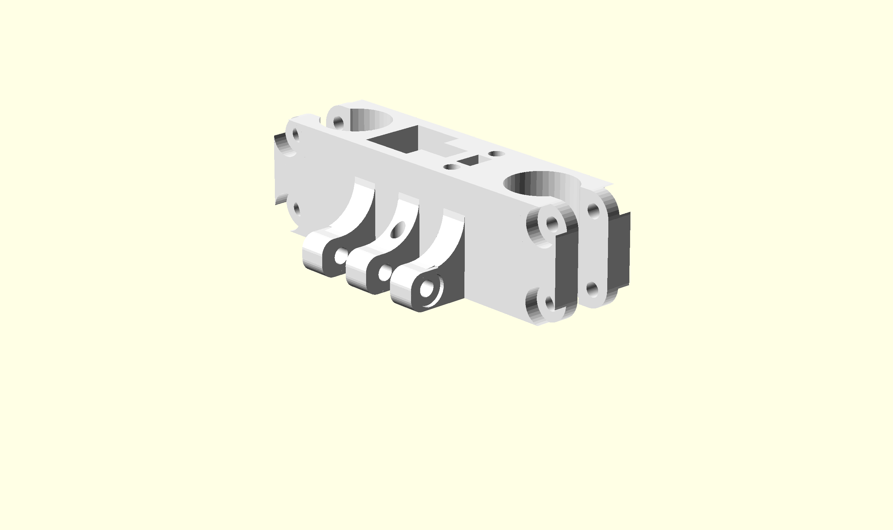
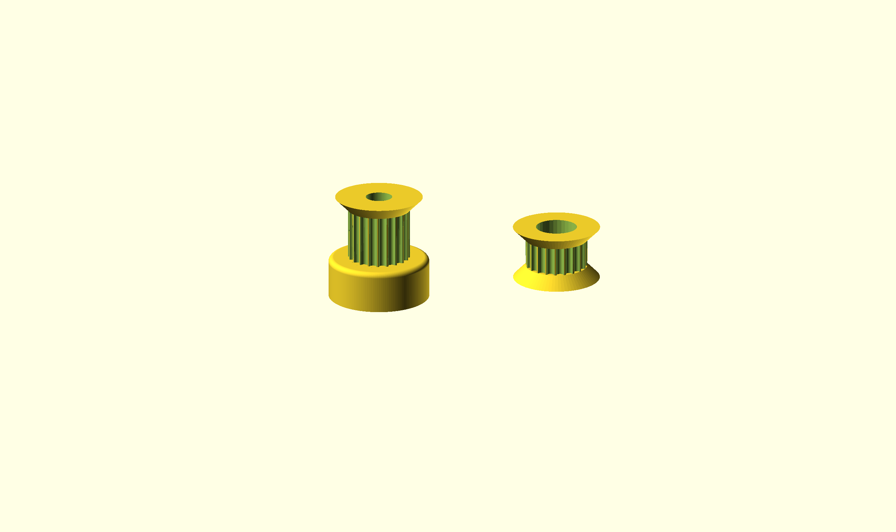
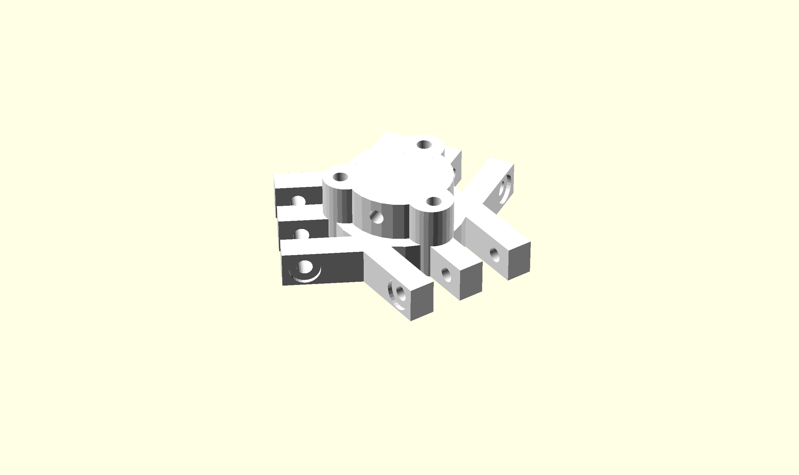
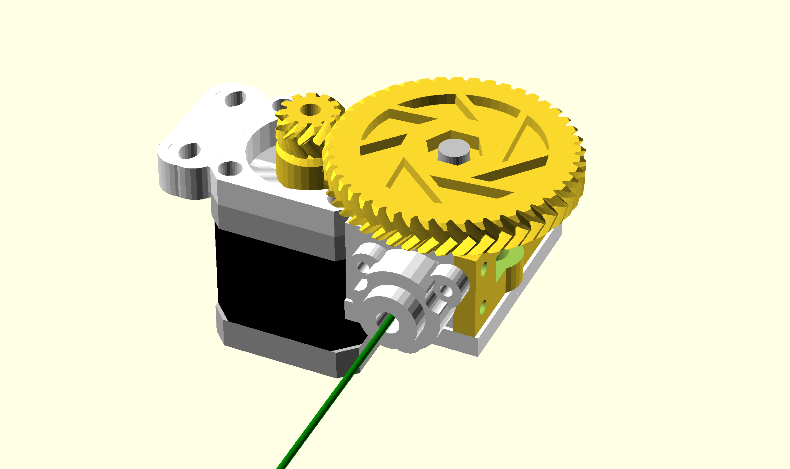
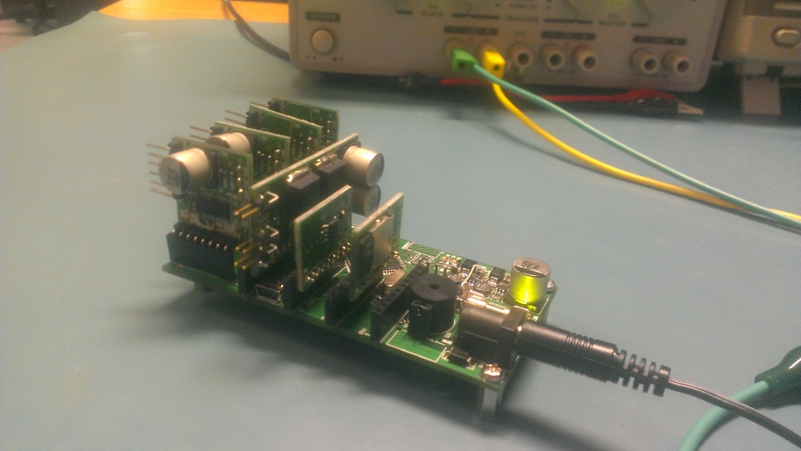
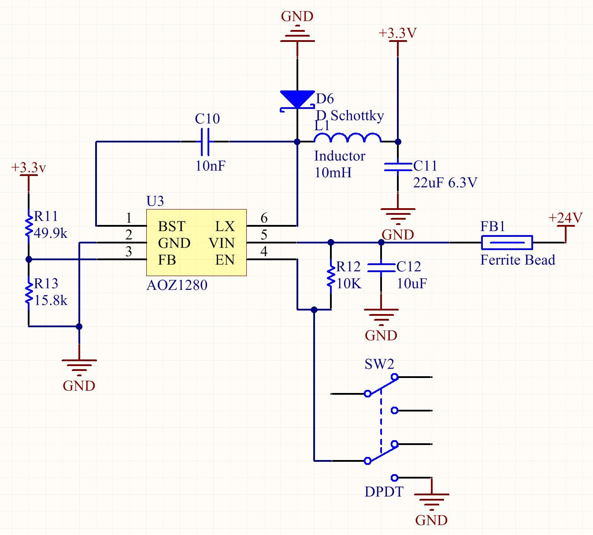

LA TROBE UNIVERSITY
Delta Printer Project Report
by
Keith Brown
Final Year Project Report
in the
Faculty of Science, Technology and Engineering
Department of Electronic Engineering
December 2013
Declaration of Authorship
La Trobe University
Department of Electronic Engineering
Statement of Authorship
INDIVIDUAL SUBMISSION
Please read the following instructions and associated University documents before
completing and submitting this form with your item of assessment.
1. A Statement of Authorship must be completed for all items of assessment where the assessment is worth
ten percent (10%) or more of the total for the unit.
2. The Academic Misconduct Policy found at http://www.latrobe.edu.au/policies
3. Statute 16 found at http://www.latrobe.edu.au/legalservices/statutes.html
4. Regulation 16.2 found at http://www.latrobe.edu.au/legalservices/regulations.html
I certify that the attached material is my original work. I declare that no other person's
work has been used without due acknowledgement. Except where I have clearly stated that I
have used some of this material elsewhere, it has not been presented by me for examination in
any other course or unit at this or any other institution.
I have read the Academic Misconduct Policy, Statute 16 and Regulation 16.2 relating to
Student Discipline and Academic Misconduct, which are available on the University's web site
and understand that I am bound by such Policy, Statute and Regulation and that I may be subject
to student discipline processes in the event of an act of plagiarism by me.
I understand the nature of plagiarism to include the reproduction of someone else's
words, ideas or findings and presenting them as my own without proper acknowledgement.
Further, I understand that there are many forms of plagiarism which include direct copying or
paraphrasing from someone else's published work (either electronic or hard copy) without
acknowledging the source; using facts, information and ideas derived from a source without
acknowledgement; producing assignments (required to be independent) in collaboration with
and/or using the work of other people; and assisting another person to commit an act of
plagiarism.
I understand that the work submitted may be reproduced and/or communicated by the
University or a third party authorised by the University for the purpose of detecting plagiarism.
I agree for the Department to keep a copy of my assignment for a database.
Unit Code: …………………………………………………………………………………………
Unit Name: …………………………………………………………………………………………
Lecturer/Tutor's name : ……………………………………………………………………….
Name of Document: …………………………………………………………………………….
Student Number: …………………………………………………………………………………..
Family Name: ……………………………………………………………………………………….
Given Names: ………………………………………………………………………………………..
Signature of Student: ………………………………………………………………………………….
Date Submitted: ……………………………………………………………………………………….
i
LA TROBE UNIVERSITY
Abstract
Faculty of Science, Technology and Engineering
Department of Electronic Engineering
Bachelor of Electronic Engineering
by Keith Brown
This document describes the project plan for an inexpensive 3D printer. The project is
developed for the final year engineering project at La Trobe University by Keith Brown.
The printer will be in the form of a delta machine. The intention is to reduce the number
of components and utilise cheaper hardware while still achieving a fast accurate print.
The electronics will not be a direct derivative of current implementations. Experimen-
tation with alternative architecture will be trialled with the goal of delivering a more
computational capable system.
An introduction into 3D Printing and its concepts, advantages and issues is outlined.
The commercial viability for both commercial and consumer markets is described. This
projects primary, secondary and tertiary objectives are listed. The strategies to achieve
these goals is also described, followed by budget requirements and lastly a detailed
schedule is included.
Acknowledgements
I would like to share my sincere gratitude to Dr Robert Ross, my primary supervisor
whom has given me so much creative control. Robert has provided constant assistance.
He also has bestowed me with his precious technical expertise. Adam Console my co-
supervisor, has helped steer this project in the right direction on numerous occasions. It
was Adam that suggested the delta machine design. His diverse knowledge is irreplace-
able.
The RepRap community has paved the way for projects like this. There is a wealth of
freely available information on their website and forums. I hope that I will be able to
express my appreciation by giving something back to the open source community.
I would like to personally thank everyone who has supported me. I have discussed this
project with many of my friends and family, who have contributed with valuable support
and feedback.
iii
Contents
Declaration of Authorship
i
Abstract
ii
Acknowledgements
iii
List of Figures
vi
List of Tables
vii
1
Introduction
1
1.1
3D printing methods . . . . . . . . . . . . . . . . . . . . . . . . . . . . . .
2
1.2
FDM Articulation implementations . . . . . . . . . . . . . . . . . . . . . .
3
1.3
FDM accuracy and materials . . . . . . . . . . . . . . . . . . . . . . . . .
3
1.4
Proposed Solution . . . . . . . . . . . . . . . . . . . . . . . . . . . . . . .
4
1.5
Commercial Viability . . . . . . . . . . . . . . . . . . . . . . . . . . . . . .
4
1.5.1
Commercial Market . . . . . . . . . . . . . . . . . . . . . . . . . .
5
1.5.2
Consumer Market . . . . . . . . . . . . . . . . . . . . . . . . . . .
6
2
Structure and positioning analysis
7
2.1
Structure . . . . . . . . . . . . . . . . . . . . . . . . . . . . . . . . . . . .
7
2.2
Simple one dimension position
. . . . . . . . . . . . . . . . . . . . . . . .
8
2.3
Platform . . . . . . . . . . . . . . . . . . . . . . . . . . . . . . . . . . . . . 10
2.4
Vertical travel constraints . . . . . . . . . . . . . . . . . . . . . . . . . . . 10
2.5
Two dimensional position in the vertical plane . . . . . . . . . . . . . . . 10
2.6
Two dimensional position in the horizontal plane . . . . . . . . . . . . . . 11
2.7
Platform in the horizontal plane . . . . . . . . . . . . . . . . . . . . . . . 13
2.8
Three dimensional positioning
. . . . . . . . . . . . . . . . . . . . . . . . 13
2.9
Constraints . . . . . . . . . . . . . . . . . . . . . . . . . . . . . . . . . . . 13
2.9.1
Printing Bed . . . . . . . . . . . . . . . . . . . . . . . . . . . . . . 13
2.9.2
Universal Joint Angle Range . . . . . . . . . . . . . . . . . . . . . 14
3
Motion
16
3.1
Path Tracing . . . . . . . . . . . . . . . . . . . . . . . . . . . . . . . . . . 16
3.2
Acceleration . . . . . . . . . . . . . . . . . . . . . . . . . . . . . . . . . . . 16
iv
Contents
v
4
Hardware
18
4.1
Frame . . . . . . . . . . . . . . . . . . . . . . . . . . . . . . . . . . . . . . 18
4.2
Frame Brackets . . . . . . . . . . . . . . . . . . . . . . . . . . . . . . . . . 21
4.2.1
Bottom Level . . . . . . . . . . . . . . . . . . . . . . . . . . . . . . 21
4.2.2
Top Level . . . . . . . . . . . . . . . . . . . . . . . . . . . . . . . . 21
4.3
Platform . . . . . . . . . . . . . . . . . . . . . . . . . . . . . . . . . . . . . 22
4.4
Linkages . . . . . . . . . . . . . . . . . . . . . . . . . . . . . . . . . . . . . 22
4.5
Linear Actuators . . . . . . . . . . . . . . . . . . . . . . . . . . . . . . . . 23
4.5.1
Carriage . . . . . . . . . . . . . . . . . . . . . . . . . . . . . . . . . 23
4.5.2
Belt Drive . . . . . . . . . . . . . . . . . . . . . . . . . . . . . . . . 23
4.5.3
Pulley and idlers . . . . . . . . . . . . . . . . . . . . . . . . . . . . 23
4.5.4
Motors . . . . . . . . . . . . . . . . . . . . . . . . . . . . . . . . . . 24
4.6
Tool End . . . . . . . . . . . . . . . . . . . . . . . . . . . . . . . . . . . . 25
4.6.1
Plotter . . . . . . . . . . . . . . . . . . . . . . . . . . . . . . . . . . 25
4.6.2
FDM Tool . . . . . . . . . . . . . . . . . . . . . . . . . . . . . . . . 26
4.6.2.1
Extruder . . . . . . . . . . . . . . . . . . . . . . . . . . . 26
4.6.2.2
Bowden Filament Feeder . . . . . . . . . . . . . . . . . . 27
5
Electronic Systems
28
5.1
Methodology . . . . . . . . . . . . . . . . . . . . . . . . . . . . . . . . . . 28
5.2
Microcontroller . . . . . . . . . . . . . . . . . . . . . . . . . . . . . . . . . 29
5.3
Motor Drivers . . . . . . . . . . . . . . . . . . . . . . . . . . . . . . . . . . 30
5.4
Communication . . . . . . . . . . . . . . . . . . . . . . . . . . . . . . . . . 30
5.5
Heating elements . . . . . . . . . . . . . . . . . . . . . . . . . . . . . . . . 30
5.6
Sensory input . . . . . . . . . . . . . . . . . . . . . . . . . . . . . . . . . . 30
5.7
Power . . . . . . . . . . . . . . . . . . . . . . . . . . . . . . . . . . . . . . 31
5.8
Safety . . . . . . . . . . . . . . . . . . . . . . . . . . . . . . . . . . . . . . 32
6
Software
33
6.1
Major Functions . . . . . . . . . . . . . . . . . . . . . . . . . . . . . . . . 33
6.2
Major Constraints . . . . . . . . . . . . . . . . . . . . . . . . . . . . . . . 33
6.3
High Level Diagrams . . . . . . . . . . . . . . . . . . . . . . . . . . . . . . 34
6.4
Sequence Analysis . . . . . . . . . . . . . . . . . . . . . . . . . . . . . . . 34
6.5
Framework . . . . . . . . . . . . . . . . . . . . . . . . . . . . . . . . . . . 34
6.5.1
Device Abstraction . . . . . . . . . . . . . . . . . . . . . . . . . . . 34
6.6
Implementation . . . . . . . . . . . . . . . . . . . . . . . . . . . . . . . . . 35
6.6.1
Portability Header . . . . . . . . . . . . . . . . . . . . . . . . . . . 35
6.6.2
G code interpreter . . . . . . . . . . . . . . . . . . . . . . . . . . . 36
6.6.3
Positioning . . . . . . . . . . . . . . . . . . . . . . . . . . . . . . . 36
6.6.4
Motion . . . . . . . . . . . . . . . . . . . . . . . . . . . . . . . . . 37
7
Testing
39
8
Results
40
List of Figures
1.1
Growth of CAD designs on thingiverse.com . . . . . . . . . . . . . . . . .
5
2.1
Structure Diagram . . . . . . . . . . . . . . . . . . . . . . . . . . . . . . .
7
2.2
Simple one dimension parameters . . . . . . . . . . . . . . . . . . . . . . .
9
2.3
Top view components . . . . . . . . . . . . . . . . . . . . . . . . . . . . . 12
2.4
Universal joint angle horizontal range . . . . . . . . . . . . . . . . . . . . 14
4.1
System30 Beam . . . . . . . . . . . . . . . . . . . . . . . . . . . . . . . . . 18
4.2
8mm round bar and LM8UU Linear bearings . . . . . . . . . . . . . . . . 19
4.3
Early Sktech Of Frame Design . . . . . . . . . . . . . . . . . . . . . . . . 20
4.4
Frame Bottom Bracket . . . . . . . . . . . . . . . . . . . . . . . . . . . . . 21
4.5
Frame Top Bracket . . . . . . . . . . . . . . . . . . . . . . . . . . . . . . . 21
4.6
Platform . . . . . . . . . . . . . . . . . . . . . . . . . . . . . . . . . . . . . 22
4.7
Traxxas Rod Ends w/Hollow Balls Large
. . . . . . . . . . . . . . . . . . 22
4.8
Carriage . . . . . . . . . . . . . . . . . . . . . . . . . . . . . . . . . . . . . 23
4.9
Gear and idler . . . . . . . . . . . . . . . . . . . . . . . . . . . . . . . . . 24
4.10 Nema 17 Stepper Motor . . . . . . . . . . . . . . . . . . . . . . . . . . . . 24
4.11 Plotter Attachment . . . . . . . . . . . . . . . . . . . . . . . . . . . . . . . 25
4.12 Plotter Homed . . . . . . . . . . . . . . . . . . . . . . . . . . . . . . . . . 25
4.13 J-head Extruder . . . . . . . . . . . . . . . . . . . . . . . . . . . . . . . . 26
4.14 Extruder Attachment
. . . . . . . . . . . . . . . . . . . . . . . . . . . . . 26
4.15 Bowden Filament Feeder . . . . . . . . . . . . . . . . . . . . . . . . . . . . 27
5.1
First iteration of electronics . . . . . . . . . . . . . . . . . . . . . . . . . . 28
5.2
Second revision . . . . . . . . . . . . . . . . . . . . . . . . . . . . . . . . . 29
5.3
Photo-interrupter . . . . . . . . . . . . . . . . . . . . . . . . . . . . . . . . 31
5.4
Power circuit . . . . . . . . . . . . . . . . . . . . . . . . . . . . . . . . . . 32
6.1
radius.eps . . . . . . . . . . . . . . . . . . . . . . . . . . . . . . . . . . . . 37
6.2
pixels.eps . . . . . . . . . . . . . . . . . . . . . . . . . . . . . . . . . . . . 38
vi
List of Tables
2.1
List of vectors . . . . . . . . . . . . . . . . . . . . . . . . . . . . . . . . . .
8
vii
Chapter 1
Introduction
3D Printers have received a lot of media attention recently. Additive manufacturing has
been around for at least 30 years<cite>1, 2</cite>. However, in the last five years
popularity has increased dramatically due to the availability of much cheaper entry level
machines. It is now possible for the general public to purchase pre-assembled printers
at a similar cost as a personal computer.
There will always be innovation and dangers associated with a new technology. We
already have prime examples of both aspects; At a 2011 TED talk, Dr Anthony Atala
presented a human kidney prototype that his team had printed<cite>3</cite>. Late
2012 Cody Wilson uploaded a video to Youtube that showed himself firing a gun mostly
composed of 3D printed parts<cite>4</cite>.
The environment will benefit from this new way of producing products. Firstly, plastic
items can be recycled and reused to create new, more useful items. This not only
reduces costs but it also eliminates transportation of new items. They no longer need
to be imported and transported all over the country, they can just be downloaded.
Whilst companies like Objet and Stratasys produce printers for the commercial sector,
it is hobbyist style printers that have spread awareness of such technology. The Reprap
foundation has produced numerous models under the GPL licence. Their main goal is
to produce an affordable device that can self replicate. All of the designs are available to
download and print. Makerbot Industries is a comercial operation that was born from
an open source community.
Online services such as Shapeways provides 3D printing services. This allows their
customers to receive a higher quality print without investing in expensive hardware.
CAD design community sites have also been very popular such as ’thingiverse.com’.
1
Introduction
2
There are over 30,000 free designs including a key-chain fob, mobile phone case, model
radial engine and even 3D printer parts and upgrades.
1.1
3D printing methods
Additive manufacturing is the process of constructing a three-dimensional object by
depositing material in discrete layers. Conversely, traditional machining methods are
subtractive; material is removed to expose the desired object. This printer utilises an
additive method as it produces fine plastic layers to build an object. There are many
different approaches of additive manufacturing. The main four methods are outlined in
the following paragraphs.
Fused deposition modelling or FDM is the method of extruding thermoplastics in layers.
This project is considered to use an FDM method as it extrudes fine plastic layers to build
an object. The printer deposits plastic material by melting it through a hot extruder.
The extruder resembles a metal funnel that takes solid plastic and produces liquid plastic
out of a small hole. The liquid plastic can be fused to previously deposited material. The
machine must physically move the extruder around an area, while placing plastic where
it is required. This process is repeated layer by layer to achieve a three-dimensional
object. The technology was invented by S. Scott in 1980 <cite>2</cite>.
Selective laser sintering or SLS is a technique that allows either metal, plastic, ceramic
and glass powder to be fused together with a powerful laser. The laser targets cross-
sections, selectively fusing a fine layer of powder to the object. Once a layer has been
complete, a fresh layer of powder is dusted over the object and the process repeats.
The left over material acts as a support for the object being manufactured. After the
procedure has finished, the excess powder can be removed and used for the next print.
The process is slow, producing porous but strong results.
Stereolithography or SLA is the method of using an ultraviolet light to cure a photopoly-
mer. The printing platform sits in a vat of liquid resin. The light targets a cross-section
of the desired object and the exposed resin will solidify. Once the layer has completed,
the platform will move down allowing for another layer to be added to the model. SLA
produces accurate results but is a very slow process. SLA has received a lot of attention
recently as the method has been adopted by a handful of young start ups. It offers a
much greater result compared to the current generation of FDM printers. However the
hardware and resin is very expensive.
Laminated object manufacturing or LOM is another rapid prototyping method. It uses
a laser or a knife to cut out layers from an adhesive-coated material. The layer is
Introduction
3
then heated and pressed onto the previous layers. A new sheet of material is rolled in
place and the process repeats. This method can be relatively cheap as readily available
material such as paper can be used.
Each process is managed by a technique called ’computer numerical control ’ or CNC.
This method is essentially computer controlled automation. Three-dimensional models
are developed using ’Computer aided design’ or CAD. These CAD models are processed
to produce CNC commands known as G-code. The G-codes are instructions that tell
the machine how to produce the CAD model.
1.2
FDM Articulation implementations
A Cartesian Gantry structure is the most common implementation. It consists of a
linear actuator for each axis of freedom. The horizontal plane generally has a sturdy rail
that a bridge is mounted on, this rail permits motion in the x direction. A carriage is
mounted to a rail that connects the bridge together. The carriage can move along this
rail and therefore permits motion in the y direction. Lastly the carriage has a tool that
is capable of actuating in and out in the z direction.
The Gantry system is a well tested framework and is industry standard. It can be
found in many applications from small desktop CNC machines to huge container cranes.
While the frame is very strong, each linear actuator is dependent on another. The bridge
actuator has to be the strongest as it must provide enough force to move the bridge,
carriage and tool. This becomes an issue for fast moving applications as the momentum
will be relatively large.
The Delta robot has three vertical rails placed in the formation of an equilateral triangle.
Each linear actuator moves in the same direction and has kinetic linkages that connect
each carriage to a central platform. This platform can be positioned by placing each
carriage at a certain height. This is an improvement over the Gantry setup because each
actuator shares the load equally. It is capable of faster speeds because there is less load
on the tool end.
1.3
FDM accuracy and materials
Currently, leading consumer 3D printers can produce objects with layers heights of 0.1
millimetres. Such an accurate print will generally take around five hours for a medium
sized print. Pricing for a mostly pre-assembled unit is around USD$2,200.
Introduction
4
Currently there are two main types of plastics readily available for FDM printing. Firstly
Acrylonitrile Butadiene Styrene or ABS is a strong material. It is a oil based plastic
that can be melted and extruded at a temperature of approximately 105 °C. It is fairly
cheap at $40 a Kg. It does contract slightly as it cools.
Polylactic Acid or PLA is another alternative that can be used for FDM printing. It
is marginally less expensive then ABS. While being more brittle then ABS it does not
contract as much. PLA is a biodegradable polymer and actually is produced by corn
starch. Because of it’s lower melting point it is not ideal for applications related to heat.
1.4
Proposed Solution
The delta machine design has been adopted for this project. Recently the Rostock
project has spawned many derivatives, most achieving cheaper construction over the
last generation of reprap printers. Delta machines have been used for many applications
including; pick and placers, packaging and production line sorters.
Its simplicity helps reduce hardware costs. But the biggest advantage is the machines
speed and accuracy. If the central platform is kept light, fast acceleration can be main-
tained. This permits the machine to perform in a sporadic manner while maintaining
an accurate position.
The electronics system will not be a derivative of current implementations. I will ex-
periment with different architectures with the goal of producing a much cheaper but
fully capable system. The components will be made modular to allow for a high level of
customisation. This helps to keep the main-board costs low but still permits additional
more expensive upgrades such as a Ethernet add on.
1.5
Commercial Viability
This old technology is becoming established in a new market. While it becomes more
accessible, new opportunities begin to emerge and intern, increases demand. Prices are
decreasing, materials are becoming more accessible and there is an increasing amount of
printable designs being uploaded to the Internet. The later attributes the most positive
influence to the 3D printing market. This makes an old product more valuable.
Introduction
5
Growth of items uploaded to Thingiverse
●
30000
●
●
●
25000
●
●
●
●
20000
●
●
●
w items uploaded
●
15000
●
●
●
●
●
10000
●
●
●
●
Number of ne
●
●
●
5000
●●●●●●●●
●
●●●●●●●●●●●●●●●●●
0
2009
2010
2011
2012
2013
Time (years)
Figure 1.1: Growth of CAD designs on thingiverse.com
It is clear that this market is expanding at a promising rate. Furthermore because there
is such a diverse range of neighbouring markets that will benefit from this technology,
it is likely that it will be supported by commercial demand alone. Applications for 3D
printing have yet to be completely discovered, the boundaries are always being pushed
by innovators. It is apparent that a very successful industry has been created.
1.5.1
Commercial Market
3D printing can help many different businesses. For example; Product designers can
produce prototypes within a few hours, prosthetics can be made for a person more fre-
quently and engineers can produce custom parts easily. It is important to note that
even if a 3D printer existed in every home, there are still many skills that can’t be
replaced by automation. Downloading a generalised product will never replace a profes-
sionally crafted custom version. 3D printing just streamlines the development cycle and
promotes rapid growth.
Introduction
6
Rapid prototyping reduces development costs and creates new opportunities. It is possi-
ble that we will see a rise in hardware start-ups similar to the influx of software start-ups
we have seen recently. It may be more feasible for a young company to attempt entering
into established markets with little overhead.
1.5.2
Consumer Market
There is a number of reasons why an individual might desire a 3D printer. It may help
reduce our consumption rate by allowing us to easily repair broken household items.
While it is unlikely for the average person to need a miniature factory, it is ideal for
hackers, hobbyists, artists and craftsmen
Currently, the largest consumer market for 3D printing falls inside the open source
community. Although intellectual property is freely shared, support and labour is very
valuable. These customers are generally open to early adoption of new technology. The
network of passionate, diversely skilled customers strive to improve the current designs
and collaboratively innovate the CNC scene.
Chapter 2
Structure and positioning analysis
2.1
Structure
A delta machine consists of a number of kinetic chains that meet at a central platform.
This platform can be moved by actuating the pivots connected to the main structure.
The platform is kept parallel to the floor during motion. [Figure 2] represents a simple
two armed delta machine. The two-dimensional diagram helps to illustrate the important
lengths and vectors. After we have analysed a two dimensional machine we will apply
these concepts to three-dimensions.
𝒛
𝒚
𝒙
𝑳
𝒉
𝒂
r
𝑶
𝑫
𝒑(𝒙,𝒚,𝒛)
Figure 2.1: Structure Diagram
7
Structure and positioning analysis
8
D
Horizontal length of the frame
L
Vertical length of the frame
a
Height of the actuator pivot point from the origin
h
Length of the kinetic linkage
r
Radius of the platform
p
Position of the extruder tip or centre of the platform
O
Origin of the system
x
Horizontal vector
y
Vertical vector
z
Depth vector
Table 2.1: List of vectors
The following assumptions are made to help define the system:
• Platform and linkages must stay within the frame’s outer rails.
• Linkages are not restricted in any way, they may swivel on their joins in any
direction.
• The platform can not move down past the base.
• Linkages are restricted to the rail’s length.
• Linkages can not stretch or contract.
2.2
Simple one dimension position
Lets consider one dimension to begin with, Figure 1 illustrates the movement of three
key points; the platform and the left and right linear actuators. We can see that if the
linkages are the same length as the vertical distance, the platform is capable of reaching
any position along the x axis.
Also, it can be seen that a vertical actuator requires an equal amount of travel to permit
full movement. It is important to note that the platform is considered a point source in
this example. Practically this is not the case as we will require a place to mount tools.
For a desired position of p(x), we need to derive where to place linear actuators. Take
figure [3] below, lets derive the equations that will translate a desired x into a1 and a2.
Structure and positioning analysis
9
𝒛
𝒚
𝒙
𝒂2
𝒉
𝒂1
𝒃1
𝒙
𝒃2
𝑫
Figure 2.2: Simple one dimension parameters
Firstly, lets derive relationship between x and a1:
(1)h2 = a21 + b21
⇔ a1 =
h2 − b21
(2)x = b1 − D/2
⇔ b1 = x + D/2
substituting (1) into (2) gives
a1(x) =
h2 − (x + D/2)2
Now, lets find the relationship between x and a2:
(3)h2 = a22 + b22
⇔ a2 =
h2 − b22
(4)b2 = D − b1
substituting (2) into (4) gives
b2 = D − (x + D/2)
Structure and positioning analysis
10
⇔ b2 = D/2 − x
finally, substituting (4) into (3)
a2(x) =
h2 − (D/2 − x)2
2.3
Platform
We now need to consider what happens to the linkages when they are offset by the
platforms width.
By adding extra length to the horizontal component, we have decreased the horizontal
outer bounds of the system. The smaller the platform the more room we are able to
travel. It should also be noted that the larger the platform, the less vertical travel is
required for the actuators.
The Platform reduces the b1 and b2 term in our position equation by r. We now have:
a1(x) =
h2 − (x + D/2 − r)2
a2(x) =
h2 − (D/2 − x − r)2
2.4
Vertical travel constraints
We can also reduce the vertical travel required by reducing the linkages length. This
intern reduces the available printing area. However, this can be used to our advantage.
For example if we needed to restrict the horizontal bounds so that the platform can’t
physically interfere with the belt drive that runs alongside the vertical rails.
2.5
Two dimensional position in the vertical plane
Now we are able to examine how we may add a vertical component to the system. From
the last sections we discovered that the length required for the vertical actuators is the
equal the linkages length. In this example, we have created a square printable area of
(h − 2D)2. This is possible as the rails are twice the length of the linkages length or
L = 2(h − 2D).
Structure and positioning analysis
11
Introducing the z component directly adds to the a1 and a2 terms. The position equa-
tions are amended as:
a1(x, z) =
h2 − (x + D/2 − r)2 + z
a2(x, z) =
h2 − (D/2 − x − r)2 + z
2.6
Two dimensional position in the horizontal plane
Now its time to examine how adding a third actuator allows for two dimensional move-
ment in the horizontal plane. Figure [8] is a top-down view of our system. The actuators
are placed in a equilateral triangle formation to distribute the load evenly. The posi-
tion of the platform can be altered by changing the lengths of the linkages horizontal
component, the b term. Remember, this is not stretching the linkages, it is merely dis-
placing length between the horizontal and vertical component - the hypotenuse remains
the same. By looking straight down into the system, only the b vectors are visible, the
carriages on the rails or the a term is directed in/out of the page.
The coordinates system has been aligned with the actuators to help simplify the problem.
The origin is placed at the centre of the print bed. Please note that the print bed is
represented as a circle with its radius equal to the minimum distance from the origin to
the frame. The printer is actually capable of printing in a slightly rounded three point
triangle (see figure[9]), but to help visualise and simplify the system we have selected a
circular print bed.
To control the platforms position we must modify the carriages vertical position a.
However, the horizontal plane position is completely dependent on b. We have already
√
established the relationship between a and b, and that is a =
h2 − b2. We now need
to develop the relationship between b and the position (x, y).
Each actuator will have its own equation for calculating its b term. This is because they
are not placed uniformly around the coordinates system even though they are equally
apart. Firstly, the general rule for calculating b as a function of the platforms position:
−
−−−−−−
→
bn(x, y) = |RnP (x, y)|
Where R is the position vector of the target actuator and P is the position vector of the
platform.
Structure and positioning analysis
12
𝒚
𝒙
b1
e1
d1
b2
b3
D
Figure 2.3: Top view components
Figure [8] illustrates that this problem can be solved by a simple application of Pythago-
ras’ theorem again.
Top actuator:
d1(x) = x
√3
e1(y) =
D − y
3
b1(x, y) =
d2 + e2
1
1
√3
b1(x, y) =
(x2 +
D − y)2
3
Bottom left actuator:
1
d2(x) =
D + x
2
√3
e2(y) =
D + y
6
√
1
3
b2(x, y) =
( D + x)2 + (
D + y)2
2
6
Bottom right actuator:
1
d3(x) =
D − x
2
Structure and positioning analysis
13
√3
e3(y) =
D + y
6
√
1
3
b3(x, y) =
( D − x)2 + (
D + y)2
2
6
2.7
Platform in the horizontal plane
Adding a platform with a radius of r just offsets our x and y components as seen in
figure [9]. The amended equations are:
√3
a1(x, y) =
(
D − y+r)2 + x2
3
√
√
1
1
3
3
a2(x, y) =
( D + x− r)2 + (
D + y−
r)2
2
2
6
2
√
√
1
1
3
3
a3(x, y) =
( D − x+ r)2 + (
D + y−
r)2
2
2
6
2
2.8
Three dimensional positioning
Both horizontal and vertical components have been explained and now can be combined
into one system. To implement a three dimensional system, we simply need to replace
our bn variable in the vertical plane equation with the horizontal plane equations. The
result is:
√3
a1(x, y, z) =
(
D − y + r)2 + x2 + z
3
√
√
1
1
3
3
a2(x, y, z) =
( D + x − r)2 + (
D + y −
r)2 + z
2
2
6
2
√
√
1
1
3
3
a3(x, y, z) =
( D − x + r)2 + (
D + y −
r)2 + z
2
2
6
2
2.9
Constraints
2.9.1
Printing Bed
A design assumption was made at the beginning of this section; The platform can not
be positioned outside of the frame. To force this rule to apply, we must set the linkages
Structure and positioning analysis
14
length equal to the minimum distance from a rail to a side of the frame. The maximum
length required is a line straight down the y axis from the rail to the frame which is
√
equal to
3 D. If we swing the platform around, pushing it to the maximum radius that
2
this length permits, we see that the path is not actually a circle but a rounded triangle.
The light blue path in figure [11] is the maximum positions. Such an unusual path is
typically not needed, so we will simplify our problem by using a circular print bed.
To allow for a platform, we must subtract its radius from each of the linkages length.
So, our rule for h is:
√3
h =
D − r
2
2.9.2
Universal Joint Angle Range
𝒚
𝒙
θ
Figure 2.4: Universal joint angle horizontal range
The universal joints that will pivot to allow full movement will need to be capable of a
certain range. This can be calculated exactly with:
√
2− 3 r
θ = 60 − 2 arctan (
2
)
1 D
2
Structure and positioning analysis
15
Practically, we can simplify the problem by aiming for 60◦ in the horizontal direction
and 90◦ in the vertical direction.
Chapter 3
Motion
3.1
Path Tracing
Once a three dimensional object has been split up into two dimensional layers, the
extruder head must trace the outlines of each layer. Once a layer has been traced, the z
component moves a step down and the extruder will trace the next layer. The process
repeats until all layers have been extruded leaving a fully formed three dimensional
object.
To move the extruder in a desired direction, we must calculate the distance and direc-
tion that each actuator must travel. This can be done by subtracting actuator heights
from the last position with the heights of the next move. This gives us three vectors
describing the distance and direction. The next step is to translate these distances into
corresponding speeds. To move in a straight line, each actuator must complete their
respective distances at the same time.
speed = displacement/changeintime
3.2
Acceleration
Acceleration is required to ensure smooth motion is maintained. Smooth motion is
essential for reaching high speeds and also to minimise a stepper motor skipping a
step. The rate of acceleration can be written as a function of current and next frames
momentum. We are only concerned with the momentum of the actuator carriages, not
the momentum of the platform.
16
Motion
17
P = mv
where P is momentum m is mass v is velocity
Once the system has been constructed, we will need to run tests to work out the maxi-
mum speed that we should attempt to accelerate to.

Chapter 4
Hardware
Now that we understand the physical constraints we can start to design the physical
system. Firstly, lets reiterate over some of the main objectives that relate to this section:
• Kit like assembly
• Cheap hardware
• Solid and sturdy construction
4.1
Frame
The first iteration of design utilised aluminium to build the framework. It was selected
due its strength and the modularity it offered during the prototyping stage.
Figure 4.1: System30 Beam
Positives
• Very strong in any direction
• Simple mounting and joining
18

Hardware
19
• Reusable
• Easy to modify / tune
Negatives
• Expensive at $25 per meter
• Requires special cutting tools
• Hard to source
However during the initial design, it was decided that the carriage designs would be too
complex which would violate one of our design goals. The very cheap and easily obtained
8mm threaded and smooth rods were used instead. This way we can use LM8UU linear
bearings instead of investing a lot of time in hardware design.
Figure 4.2: 8mm round bar and LM8UU Linear bearings
Positives
• $3.3 per meter for stainless steel round bar
• $0.90 per meter for 8mm threaded rod.
• $0.75 per unit for LM8UU linear bearings.
• Easy to obtain from metal fabricators or general hardware stores
• Can cut with a hacksaw or angle grinder
Negatives
• Flexes in the horizontal direction
Hardware
20
Figure 4.3: Early Sktech Of Frame Design
The frame will have a small enclosed area for the electronics and power supply. The
printer bed is mounted on top of the case. There is a beam on the top level that intersects
the face in half. This is primarily for a place to mount the plastic feeder but also serves
as a structural support beam.
We will need to know how much material to order. There is 3 equilateral triangles with
side lengths of D and there are 3 rails that need to be of 2D + 3 ∗ .03. The later 0.03
is to allocate room for an enclosure so that we can maintain a symmetrical print area.
But for practical purposes, we will not consider the extra length so that it is possible to
use a multiple of the original materials length.
√3
M = 3(3D) + 3(2D) +
D
2
√3
M = (15 +
)D
2
Now, we need rewrite this by substituting the relationship between D and the print bed
radius b.
√
D = 2 3(b + r)
√3 √
M (r, b) = (15 +
)(2 3(b + r))
2
To minimise waste, D needs to be a multiple of the purchased material’s length. To
further reduce waste, the purchased length should be close to a whole number.


Hardware
21
4.2
Frame Brackets
4.2.1
Bottom Level
Figure 4.4: Frame Bottom Bracket
This design was an attempt to reduce the part count by incorporating as much function-
ality into a single piece. Firstly, the 4 holes on the outer perimeter are for threaded rods
that will connect to other brackets that will form the base of the equilateral triangle.
The clamps in the centre hold on to the parallel smooth rod that form the linear actuator
and that attach to the top brackets. The screws that put pressure on the clamps also
couple the stepper motor to the bracket.
4.2.2
Top Level
Figure 4.5: Frame Top Bracket
A symmetrical design allows us to recycle many similar parts. Comparing the bottom
bracket to the top bracket we can see that the only difference is the recessed enclosure for
a 608zz bearing. They are recessed so that the bearings do not fall out during operation.


Hardware
22
4.3
Platform
Figure 4.6: Platform
The platform is simply a base to mount a tool to while connecting each linkage to a
linear actuator. In the Centre there are three holes that stand offs attach to. The outer
holes are where the ball bearings are seated.
4.4
Linkages
The linkages are made up of 4mm threaded rod cut to a specific length. The rod is
currently attached to 10mm Traxxas Rod Ends to allow movement between the carriages
and the platform. These are originally for model RC car and are reasonably priced for
their quality.
Figure 4.7: Traxxas Rod Ends w/Hollow Balls Large

Hardware
23
4.5
Linear Actuators
4.5.1
Carriage
Figure 4.8: Carriage
The outer holes with the relief cut mount LM8UU linear bearings. They are placed in
with M3 screws clamping them into place tightly. A belt runs up through the centre with
a small plate pressing against the frame fixing the belt to the carriage. The horizontal
bore are where the linkages mount to. A 30mm M3 bolt holds the rod ends in place.
4.5.2
Belt Drive
I have opted to use GT-2 belt with 2mm pitch. The GT-2 grooves are far finer then the
original T2.5 x 5mm Belt. Finer grooves will help produce smoother motion. The belts
are made from neoprene rubber and have fibreglass reinforcing running through them.
4.5.3
Pulley and idlers
The gears that match the belt were also printed. They were generated using the Open-
Scad Parametric pulley library by user ’droftart’ from Thingiverse. This is a great
library, it offers great flexibility. The tooth profiles themselves are actually generated
from the original manufactures DXF images.
The Pulley attaches to the stepper motor in the reverse orientation so that the lock nut
is easily accessible and so the belt lines up with the top bracket. The idler is sandwiched
between two 608zz bearings in the top bracket.
The gears must be perfect. It took a few trail runs before a straight tooth profile was
obtained. The best printing settings are obviously fine, 0.25mm layer heights and full
infill. Care must be taken when leveling the printing bed, it is actually better to have the


Hardware
24
bed slightly further down from the extruder so the higher layers do not clump together
and warp during printing.
Figure 4.9: Gear and idler
4.5.4
Motors
Standard common Nema 17 stepper motors have been used in this design. They feature
1.8 deg/step ands are capable at driving a single coil with up to 2.5A. They can be
obtained for $15 each.
They can provide plenty of torque and are typically powered with 12 to 24 volts. The
Steppers that were purchased are a normal bipolar configuration with four leads.
Figure 4.10: Nema 17 Stepper Motor


Hardware
25
4.6
Tool End
4.6.1
Plotter
Figure 4.11: Plotter Attachment
Before 3D printing, I wanted to be able to test and perfect the performance of the
machine. A plotter attachment was developed so that the paths generated could be
analysed. A barrel was designed to hold a normal ball point pen. The pen is cut in
half and the spring is reversed so that it is always pushing against the target surface.
Horizontal screws fix the pen in place and the vertical screws attach the plotter to the
platform.
The metal tip of the pen has a wire soldered, this is to be used when automating the
height calibration. The base is currently made from a copper plate which is kept at
ground. The pen tip is pulled high with a 10K resistor, so if the tip meets the base the
tip will be pulled low. We can detect the voltage change with our microcontroller.
Figure 4.12: Plotter Homed


Hardware
26
4.6.2
FDM Tool
4.6.2.1
Extruder
The extruder that will be used is the inexpensive common J-head extruder. It features
a PEEK nylon tube with ventilation holes to help reduce heat transfer up into the
platform. The hot end is a block of aluminium for a light weight tool. A 100K themistor
is embed in the block along side a 5.6 ohm, 1%, 5W resistor which is used as a heating
element.
Figure 4.13: J-head Extruder
A clamp setup was developed to attach the extruder to the platform. Stand offs are
used to space the extruder away from the platform so that the maximum printing depth
is available. A tube clamp is fixed on top of the extruder for use with a Bowden feeder
system (explained in the following section).
Figure 4.14: Extruder Attachment

Hardware
27
4.6.2.2
Bowden Filament Feeder
A Bowden Filament feeder is a design that aims to reduce the weight on the tool end.
The principle is by reducing the mass, we can increase the acceleration. By shifting a
heavy direct drive stepper motor off the platform and fixing it onto a stationary point,
we have greatly reduced the moving mass.
Instead of feeding filament directly into the extruder, it is fed first through a strong
PTFE tube. The tube itself does not flex much so the force eventually builds up enough
that the filament must push through the least resistances and that becomes the hot end.
A fair amount of force is required to push the filament through a length of pipe and
through the extruder. This is why I have selected to use a geared configuration to
increase my motors torque. A Herringbone gear arrangement is used as transfers power
more evenly because more then two teeth mesh together at one time. They are also
easily manufactured with 3D printing. The gears were borrowed from robo kid22 on
Thingiverse.
Figure 4.15: Bowden Filament Feeder
The design features a door like mechanism that is spring loaded to apply pressure on the
filament. It pushes a bearing against a bolt that has had a rough surface machined into
it. This provides good traction between the filament and does not slip. The filament is
then fed directly into the tube which is coupled to the moving platform. The feeder is
mounted on the top of the frame with a spool of plastic along side it.

Chapter 5
Electronic Systems
5.1
Methodology
The first iteration of electronics were designed around the goal of modularity. While it
offered the needed flexibility during the prototyping stage, a few shortcomings forced a
redesign. It featured small daughter boards that vertically plugged into a mainboard.
Exposing a SPI bus as ports that could accept any type of add on provides a possible
upgrade path in the event of a necessary addition.
Figure 5.1: First iteration of electronics
Unfortunately this configuration was too flimsy. Stepper drivers were damaged during
testing. There is a lot of manual work required to assemble such a design and would not
be practical for a final product.
28

Electronic Systems
29
The second revision was designed to be a simple low-cost single board solution. Instead
of being a complete standalone product, this version is designed to leverage of a host
computer. No external memory is used so a computer must constantly feed G-Code
commands during a print.
Figure 5.2: Second revision
One of the main goals of revision two was to be cross compatible with the exiting com-
munity firmware. The most compatible firmware is ’Teacup’ . Furthermore, any software
that I develop should be cross compatible with existing hardware such as RAMPS.
5.2
Microcontroller
The Microcontroller that has been selected is an Atmel 8-bit ATmega644. It was selected
due to its low cost, small footprint and compatibility with existing firmware. The large
ATmega family also allows for an upgrade path if required. It can be clocked up to
20MHz however I am using 10AU model which has a maximum of 10Mhz. The 10AU is
available in single quantities at $4 compared to the 20Mhz at $11.
The package includes 64 Kbytes of flash memory. It has 44 pins with a total of 32 GPIO
available. No USB communication is integrated so a USB to UART chip is required. The
physical package selected was a TQFP so that it can be easily soldered with a standard
soldering iron.
Electronic Systems
30
5.3
Motor Drivers
TI DRV8825 integrated motor drivers were selected to drive the stepper motors. They
can be configured to drive a single bipolar stepper motor at 2.5A with up to 1/32
microstepping. They do not require many external passive components. They feature a
useful error signal pin that goes high in the event of over current or heating issues. A
heat sink should provide adequate heat dissipation.
5.4
Communication
An FTDI FT220X USB to UART converter is used for communication between the host
computer and the printer. It runs at a baud rate of 38400, however burst commands can
be sent due the internal FILO buffer included in the integrated circuit. A micro USB
header was selected so that common android phone cables can be used.
5.5
Heating elements
A powerful MOSFET is used to push large current through a small resistor. This
produces heat. The heat can be monitored with a robust thermistor. A PID loop will
smoothly and accurately maintain a specific temperature. Two heat ports are available;
one for the extruder and one a heated bed.
5.6
Sensory input
To determine where the platform is in the work space, the printer must first ’home’. This
is the act of synchronising the memory coordinates with the actual physical coordinates.
It can be achieved by firstly, moving all actuators to the top of the rails. A sensor
triggers when the carriage has reached the very top so that the motor can stop. Once all
carriages have reached the very top, the platform is sent back down towards the base.
This is done by moving all carriages at the same time. Another sensor detects when the
tool end has just touched the platform signalling the end of travel. Once this occurs, all
software variables (x, y, z) can be set to 0 indicating a homed tool.
The top ’end stops’ have been implemented with Photo-interrupter modules. These have
a IR LED that shine a beam of light into a photo-transistor. If something gets in the
way of this beam, the transistor will switch off. In this case, a small height adjustable
square plate attached to the carriage breaks the IR beam. See figure x

Electronic Systems
31
Figure 5.3: Photo-interrupter
The bottom plate contact is currently triggered when the tool end tip touches the
grounded plate. The tip is pulled high through a 10K resistor and this level is monitored
by a transistor. When a contact is made the transistor’s base is forced low signalling the
end of travel has occurred. While this produces great results, it is not practical in the
long run once we move away from a copper plate. It would be nice to print on a fibreglass
board so it can be removed. Fibreglass is not conductive so the current method will not
work.
A possible alternative is to use a switch that can be retracted during print. This possible
adds a servo to the tool end increasing weight. Another alternative would be to use a
IR range finding system. While complex, it would mean that the platform could race
towards the base but slow down as it approaches the base. It also would be extremely
light weight as the only components required are a LED and a photo transistor.
5.7
Power
The AOZ1280 from Alpha & Omega Semiconductor is a 1.2A buck regulator. It is
configured to +3.3V by using a resistor divider of 49.9K and 15.8K. 1.2A is more then
enough to power all the logic and LEDs. Since the whole system is dependent on this
switched, we can control the system’s power by toggling the buck regulators enable pin.
This means that we can use a very small chip and avoid large heavy duty power switches.

Electronic Systems
32
The Stepper drivers also require a 12V to 24V supply for the internal FETs. Status LEDs
indicate both the 12V and 24V rail status. Currently 12 volts is brought in through a
standard DC barrel jack.
Figure 5.4: Power circuit
5.8
Safety
A fuse and schottky diode has been added to the power line. It prevents excessive current
drawn. This usually occurs when a fault causes a short circuit. As mentioned above,
the stepper drivers also have internal thermal fault sensors that cause the chip to shut
down until the temperature reaches a reasonable level.
Chapter 6
Software
6.1
Major Functions
The main purpose of the device is to offer basic computer numerical control functionality.
This is accomplished by many sub modules successfully different smaller tasks. They
can be broken down to:
• Accurately control the position of the tool end
• Smoothly manage speed and acceleration
• Provide a means of zeroing platform
• Manage communications to a computer
• Regulate temperature
• Implement error handling
6.2
Major Constraints
The most obvious constraint is the processing power of the small microcontroller. A
10Mhz 8-bit CPU isn’t the most impressive piece of hardware. Operations on ints and
longs will take multiple clock cycles. Without a FPU any float operations will take a
considerable amount of time. However, if we are careful with our design and execution,
issues associated with these constraints can be mitigated.
The answer is to pre-process incoming data and cache it for future use. By implementing
a queue like system we can evaluate and save upcoming tasks while the processor is not
33
Software
34
active. As long as we can queue up and process the commands faster then they are
executed, the system will remain constantly active.
A work around is to simply offload a complex task to the host computer. For example,
we will not transmit a raw STL file to the board. This would require the board to
process a large 3D description and slice it into layers. This is actually relatively power
hungry and while possible, it would be much more efficient to run an existing solution
on a computer.
Furthermore running components on a computer opens up debugging options. We can
simulate a part of the program in real time and visual display the results on a screen.
Doing so will may increase development time, but it also is a safer option considering the
time constraints. Having greater debugging utilities should speed up the prototyping
stage. Once working, individual components can be shifted to the board in iterations to
slowly confirm correct operation.
6.3
High Level Diagrams
6.4
Sequence Analysis
6.5
Framework
6.5.1
Device Abstraction
Coming from a Computer Science background I felt it was necessary to try and force
my devices into abstracted structures. The aim is to cleanly recycle as much code as
possible while promoting clean and readable code.
t y p e d e f s t r u c t LCD {
Spi * spi ;
int col ;
int row ;
int c u r s o r ;
Pin * rst ;
Pin * m ode ;
Pin * enb ;
C i r c u l a r B u f f e r * b u f f e r ;
} LCD ;
For example UART, SPI, position queue implement the same CircularBuffer structure.
Each time a new ’device’ is created a new instance of a CircularBuffer is instantiated and
Software
35
its pointer is then associated to it. Furthermore, say we required 10 LCDs on a single
SPI line. We can now simply create an array of LCD type and instantiate instances of a
LCD. The flexibility is a clear advantage. Using this method of code recycle also reduces
the amount of flash storage required to hold the program. Since the patterns are clearly
described and reused, the compiler only needs to store the functions associated with an
LCD once. If the code was written inline, the compiler would not be able to efficiently
optimise the code.
However the drawbacks may force you into inline code depending on the application.
The biggest issue is that for every execution of a abstracted LCD command adds an
additional JMP command. This is one extra clock cycle opposed to inline code. However
if speed is an issue, the inline function keyword can be used to tell the compiler to copy
the following code instead of jumping to it. This obviously bloats your program size fast
so it should be used sparingly.
6.6
Implementation
6.6.1
Portability Header
With the addition of device abstraction, I have decided to even abstract pin hardware
as well. By stripping the port pointer dereference in Atmel’s avr/io.h file, we enable
storage of useful memory locations such as ports and their corresponding modifiers.
Po rt PO RT [] = {
{( v b y t e *) _PINA ,( v b y t e *) _PORTA ,( v b y t e *) _ D D R A } ,
{( v b y t e *) _PINB ,( v b y t e *) _PORTB ,( v b y t e *) _ D D R B } ,
{( v b y t e *) _PINC ,( v b y t e *) _PORTC ,( v b y t e *) _ D D R C } ,
{( v b y t e *) _PIND ,( v b y t e *) _PORTD ,( v b y t e *) _ D D R D } ,
}
$ d e f i n e PA & PO RT [0]
$ d e f i n e PA0 & P A _ P I N [0]
$ d e f i n e PA1 & P A _ P I N [1]
...
Now that ports and pins are storable, we can associate our device structures with pins
using pointers. An easy way to keep track of a boards implementation is to write a pin
header file that maps symbolic names to actual pins. This allows us to easily maintain
a software for a number of different hardware implementations.
$ d e f i n e y _ s t e p PA0
$ d e f i n e x _ d i r PA1
$ d e f i n e m o t o r _ e n b PA2
Software
36
$ d e f i n e x _ s t e p PA3
$ d e f i n e x _ s t o p PA4
$ d e f i n e y _ s t o p PA5
$ d e f i n e b _ t e m p PA6
$ d e f i n e e _ t e m p PA7
Furthermore, this method enables us to write portable C code. Multiple architectures
can be handled by simply swapping out the pin.c file. It contains all the necessary archi-
tecture interaction. Machine code for MSP430, ATmega and ARM could be generated
by the ’same’ piece of code. The software can be written without being too concerned
with the current architecture.
vo id p i n _ l o w ( Pin * pin ) {
* pin - > po rt_ ptr - > out &= ~ pin - > ma sk ;
}
For a fully cross compatible framework timers and interrupts need to be implemented
in a similar method. This is definitely possible but out of this projects scope.
6.6.2
G code interpreter
A CAD design is saved to a STL file. The STL file is then parsed by a g-code converter
such as Slic3r. This process basically splits a 3D object into layers and then converts
these into instructions that will trace the infill. The G-code is basically a set of Cartesian
points. Further processing needs to occur, translating the position points into actuator
heights and then into speed descriptions.
Diagram here
Currently, all processing occurs on the host computer. The speed description is sent
across USB and stored in a queue. Each command is validated with a string checksum.
If an error occurred, then the board can request the computer to repeat.
The interpreter is implemented as a console like program. Firstly, a list of programs is
stored in array. Each element contains a string to match on and the associated function
pointer.
t y p e d e f s t r u c t P r o g r a m {
ch ar na me [ 2 0 ] ;
vo id (* f u n c t i o n ) () ;
} P r o g r a m ;
A new line character signals the interpreter to parse the cached string. It runs through
the string and assigns pointers to any character following a space. This is turned into an
Software
37
array of arguments that can easily be parse in the actual ’program’. The first token tell
the interpreter which program to execute. For instance the command ”home” will home
the platform. A more complex ”aprox 100 1 1 0.5” can signal the speed queue program
to parse the arguments and check the checksum.
6.6.3
Positioning
The heights of the actuators are calculated with the following equations:
var a1 = z + M ath . s qrt ( r2 - Mat h . pow ( dis t ( x , ( y + pr ) - D ) ,2) ) ;
var a2 = z + M ath . s qrt ( r2 - Mat h . pow ( dis t ( ( x -. 5* pr ) + r o o t 3 * D /2 , ( y -
r o o t 3 2 * pr ) + D /2 ) ,2) ) ;
var a3 = z + M ath . s qrt ( r2 - Mat h . pow ( dis t ( ( x +. 5* pr ) - r o o t 3 * D /2 , ( y -
r o o t 3 2 * pr ) + D /2 ) ,2) ) ;
This is implemented on the host computer and written in JavaScript. Following those
calculations, we need to determine the speeds and distance required. This is achieved
by first determining which actuator needs to travel the furthest. Then we calculate the
speed as a ratio that will make the carriage travel its distance in the same amount of
time as the other carriages. This is simply the distance divided by the largest distance.
6.6.4
Motion
Before we can write software to control the hardware, we must mathematically define
the system. Lets start with the pulley. The radius of our GT2 pulley is 11.5mm. I
have selected to only microstep 8 times. This should give a reasonable balance between
accuracy and speed.
D
1.8◦
r
Figure 6.1: radius.eps
Software
38
D = 2 ∗ π ∗ r ∗ ST EP DEG/360
So pulse on the stepper drivers STEP line will make the stepper driver increment rotation
by 0.225 degrees. This rotation is translated into linear motion via the belt drive. So for
every step, the carriage vertically travels 45.1519 um. Direction is controlled by either
a high or low on the DIR.
So a motion frame provided from the computer is described with a distance (how many
steps) and three ratios of how often a specific motor should step (equivalent to the
speed). For example ”1337 1 0.5 0.2” translates to ”Cycle 1337 times, every cycle step
X, every second cycle step Y and every fifth cycle Z.
Lets say we had a vector circle. We need to break it up into straight lines so that we
can use the method explained previously. Ideally we would break it up into many small
lines, but for this example we will split it up into 8 paths. To help visualise the problem,
we are going to assume that we are dealing with a gantry system.
start
y
x
Figure 6.2: pixels.eps
Firstly, the circle is broken into straight paths. From the starting point we need to travel
along the y axis 1 step. So this would be described with ”1 0 1 0”, following that we
need to move in the x and y direction one step. That is ”1 1 1 0”. And so on. The
only difference for a delta machine is that we are not directly plotting a image, we are
controlling the actuator heights as a function of the image.
But what if we need a angle other then 0,45 or 90? That is why the speed is a fractional
value. If we were to plot ”10 1 0.2 0” would result in an angle of 17.84 degrees.
We could divide the clock up by 1000 to support a large decimal place with accuracy.
However, if we were to divide the clock by 1000, it would need to be in the order of Ghz
Software
39
to support decent speed. A much more convenient method is to approximate absolute
steps with a running total. Firstly, we need to increment a counter associated with an
actuator with its ratio every clock cycle. We then check if the counter has incremented
its unit value. If so, then we should send a signal to step. This method permits usage
of a much smaller clock such as 10Mhz.
Furthermore, if we attach the procedure to a timer, global speed and accretion can be
controlled easily by modifying the timer compare value. This is very important when
trying to push the maximum speed of the steppers. It is important to smoothly accelerate
to high speeds to minimise mis-steps. Conversely, all actuators must maintain a relative
speed to each other, otherwise the path will be skewed.
Acceleration can be implemented as a function of the distance to the next direction
change. Basically, we need to reduce speed as a turn approaches. Then we can take
advantage of long straight runs by accelerating through them. A basic ’look ahead’
function has been implemented that runs through the motion queue calculating the next
direction change.
Chapter 7
Testing
40
Chapter 8
Results
41
Document Outline